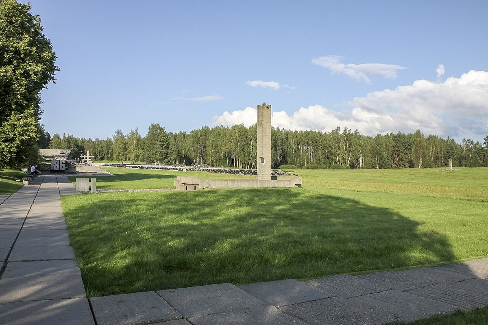
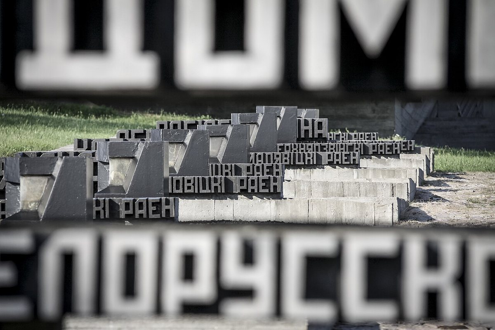
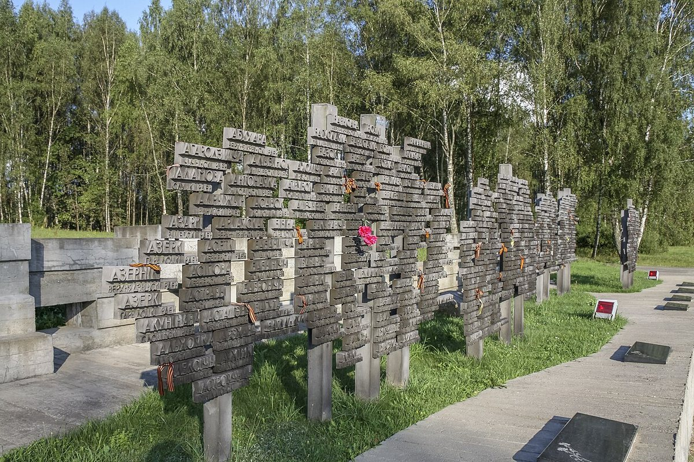

Деревня, сожжённая вместе с жителями 22 марта 1943 года. Сегодня Хатынь — один из главных символов памяти о сотнях уничтоженных белорусских деревень.
Хатынь впервые упоминается в письменных источниках в середине XVI века. До войны это была небольшая деревня в Логойском районе, жители которой занимались сельским хозяйством.
22 марта 1943 года карательный батальон окружил деревню. Людей согнали в колхозный сарай и подожгли; в огне погибли 149 жителей, в том числе 75 детей. Деревня была полностью уничтожена.
Мемориальный комплекс открыт в 1969 году. Его авторы — архитекторы Ю. Градов, В. Занкович, Л. Левин и скульптор С. Селиханов. Планировка повторяет структуру бывшей деревни: здесь есть Кладбище деревень, Площадь памяти, Стена скорби и Дерево жизни.
Центральная скульптура «Непокорённый человек» изображает жителя Хатыни Иосифа Каминского с убитым сыном на руках. Мемориал стал символом памяти о сотнях белорусских деревень, разделивших судьбу Хатыни.


